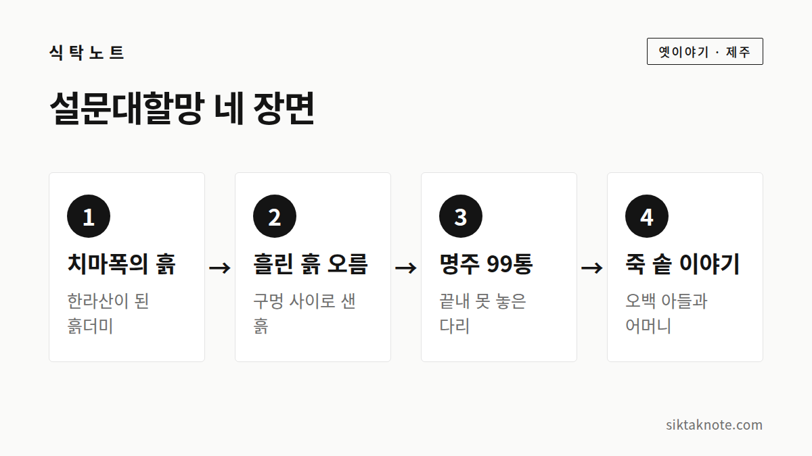

설문대할망 이야기 — 한라산과 오름을 만든 거인 할머니

3줄 요약
- 설문대할망은 치마폭에 담아 나른 흙으로 한라산과 오름을 만들었다고 전해지는 제주의 거인 여신이에요.
- 섬사람들이 명주 100통을 다 채우지 못해서, 육지로 가는 다리가 끝내 놓이지 못했다는 이야기가 유명해요.
- 제주돌문화공원과 한라산 영실에서 이 이야기의 자취를 만날 수 있어요.

제주를 만든 거인 할머니
제주에는 아주 오래된 거인 할머니 이야기가 전해 와요. 거인 여신이라고도 하는 설문대할망이에요. 몸집이 어마어마하게 커서, 제주 땅을 이 할머니가 빚었다고 해요.

치마폭에 담아 나른 흙
할망은 치마폭에 흙을 담아 날랐어요. 그 흙을 차곡차곡 쌓아 올려 가장 높이 솟은 게 한라산이에요. 그런데 할망의 치마에는 군데군데 작은 구멍이 나 있었대요. 그 사이로 흙이 흘러내릴 때마다 작은 봉우리가 하나씩 생겼는데, 그게 바로 제주의 오름이라고 해요. 오름이 360개가 넘는다는 말도 여기서 나왔고요.
할망이 한라산을 베개 삼아 누우면, 발이 바다 건너 섬에 닿을 만큼 컸다고 해요. 관탈섬 같은 섬에 발을 걸쳤다고 전해져요.

명주 99통, 놓이지 못한 다리
섬사람들은 육지로 건너갈 다리가 간절했어요. 그래서 할망에게 다리를 놓아 달라고 부탁했지요. 할망은 대신 명주 100통으로 옷을 만들어 달라고 했어요. 사람들은 열심히 모았지만 한 통이 모자란 99통밖에 채우지 못했어요. 그래서 다리는 끝내 완성되지 못했다고 해요.
죽 솥에 빠진 어머니와 오백장군
할망의 끝에 대해서는 이야기가 갈려요. 가장 널리 알려진 건 이런 이야기예요. 오백 명의 아들을 둔 어머니가 흉년에 죽을 쑤다가 커다란 솥에 빠져 죽었어요. 아들들은 아무것도 모르고 그 죽을 먹었지요. 그러다 막내가 그릇 바닥에서 뼈를 발견했고, 어머니에게 일어난 일을 알게 되었어요. 막내는 차귀도로 달려가 바위가 되었고, 다른 형제들도 슬퍼하며 흩어져 저마다 바위가 되었다고 해요. 한라산 영실 계곡에 서 있는 바위들을 오백장군이라 부르는 까닭이에요.
이야기에 따라서는 할망이 깊이를 알 수 없는 연못 물장오리에 빠졌다고도 하고, 백록담이나 바다에 빠졌다고도 해요. 오백장군 이야기 속 어머니를 늘 설문대할망으로 보는 것도 아니고요.
봄이면 영실에 철쭉이 붉게 피는데, 아들들이 흘린 눈물이 꽃이 된 거라는 이야기도 함께 전해져요.
이야기를 만나러 가는 길
제주돌문화공원은 제주시 조천읍 남조로에 있어요. 설문대할망 신화를 주제로 한 공원이고, 2025년 6월에 설문대할망전시관이 문을 열었다고 해요. 운영 시간과 쉬는 날은 가기 전에 확인해 주세요.
한라산 영실은 오백장군이라 불리는 기암괴석이 이어지는 곳이에요. 영실기암을 올려다보며 이야기를 떠올리기 좋은 자리지요. 등산로는 날씨와 입산 통제를 확인하고 가세요.
이야기가 남긴 것
설문대할망 이야기에는 오름 하나, 바위 하나에도 사연이 깃들어 있다고 믿은 제주 사람들의 마음이 담겨 있어요. 제주에서 오름을 오르게 된다면, 이 흙이 할망의 치마에서 떨어진 한 줌이라고 생각해 보세요. 풍경이 조금 다르게 보일 거예요.
이 글은 한국민족문화대백과사전과 제주도 자료 등에서 확인되는 줄거리를 바탕으로 새로 풀어 쓴 것이에요. 설화는 전해지는 곳과 이야기하는 사람에 따라 다르니, 다른 버전의 이야기도 만나 보셔도 좋겠어요.